<!DOCTYPE html>
<html>
<head>
<meta http-equiv="Content-Type" content="text/html; charset=UTF-8" />
	<title>Shanzhai Digest</title>

	<link href="css/skeleton.css" rel="stylesheet" type="text/css" />
	<link href="css/style.css" rel="stylesheet" type="text/css" />
	<script src="js/jquery-1.8.3.min.js"></script>
	<script src="js/jquery.backstretch.min.js"></script>
	<script src="js/jquery.scrollorama.js"></script>
	<script type="text/javascript" src="//use.typekit.net/uji6rtq.js"></script>
	<script type="text/javascript">try{Typekit.load();}catch(e){}</script>
	<script>
    $(document).ready(function() {

  var _gaq = _gaq || [];
  _gaq.push(['_setAccount', 'UA-27630991-1']);
  _gaq.push(['_trackPageview']);

  (function() {
    var ga = document.createElement('script'); ga.type = 'text/javascript'; ga.async = true;
    ga.src = ('https:' == document.location.protocol ? 'https://ssl' : 'http://www') + '.google-analytics.com/ga.js';
    var s = document.getElementsByTagName('script')[0]; s.parentNode.insertBefore(ga, s);
  })();
		
		var scrollorama = $.scrollorama({
        	blocks:'.scrollblock',
			enablePin: false
    	});
		
		scrollorama.onBlockChange(function() {
});

                scrollorama.animate('#secondsec',{ delay: -300, duration: 1000, property:'top', start:800, end:0 });
                scrollorama.animate('#secondsec',{ delay: 1200, duration: 100, property:'opacity', start:1, end:0 });
				scrollorama.animate('#story1pic',{ duration:1000, property:'opacity', start:500, pin:true });
                scrollorama.animate('#thirdsec',{ delay: 0, duration: 1000, property:'top', start:00, end:-800 });
				scrollorama.animate('#parallax2',{ delay: -100, duration: 1800, property:'top', start:0, end:-1000 });
				scrollorama.animate('#parallax3',{ delay: -100, duration: 1200, property:'top', start:0, end:-1000 });

      /*
		
		
		//scrollorama.animate('#story1pic',{ delay: 700, duration: 200, property:'opacity', start:0, pin: false });

		//scrollorama.animate('#parallax2',{ delay: 400, duration: 600, property:'top', start:800, end:-800 });
	});
        */
        $("#title1").backstretch(["img/cattyh.jpg"], { 'positionType': 'absolute', });
      });
	</script>

</head>

<body>

<div id="header">
	<div id="logo">
    <a href="http://shanzhai.emelynbaker.com/">SHANZHAI DIGEST</a>
    </div>
	<div id="nav">
    <ul>
	<li><a href="#essay1">Introduction</a></li>
    <li><a href="#title2">Economics</a></li>
    <li><a href="#title3">Analysis</a></li>
    <li><a href="#title4">Culture</a></li>
    <li><a href="#essay7">The Future of Shanzhai</a></li>
	</ul>
    </div>
</div>

<div class="scrollblock" id="title1">
    <div class="container">
        <div class="eight columns">
        <p> </p>
        </div>
        <div class="six columns">
        <h1 id="shanzhaititle">SHANZHAI DIGEST</h1>
        <p>An in-depth discussion of Chinese knock-off electronic devices (山寨机 shanzhaiji)， their culture, and the maker movement.</p>
        </div>
        <div class="two columns">
        	<div class="marginalia" id="m0">
            <h4>››  Written and designed by <a href="http://www.emelynbaker.com/">Emelyn Baker</a>.</h4>
            </div>
        </div>
    </div>
</div>

<div class="scrollblock">
  <div class="container" id="secondsec">
    <div class="six columns" id="story1pic">
      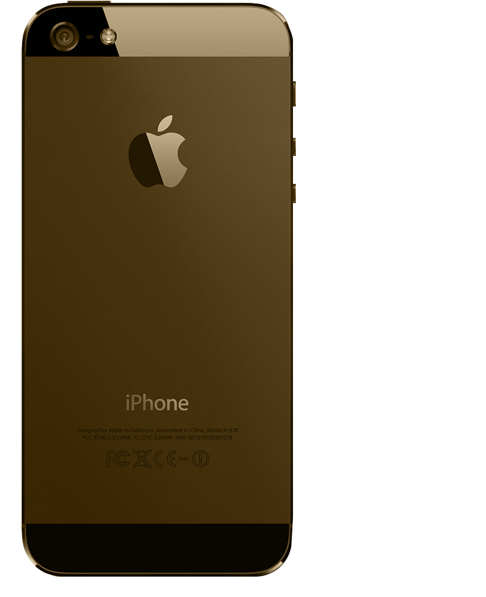
    </div>
    <div class="eight columns" id="pintext">
    </div>
  </div>
  <br/>
  <br/>
  <br/>
  <br/>
  <br/>
  <br/>

</div>

<div class="scrollblock" id="essay1">
    <div class="container" id="thirdsec">
        <div class="six columns">
          <p></p>
        </div>
        <div class="eight columns" id="pin-test">
        <h2>THIS IS SHANZHAI</h2>
        <p>There is an iPhone just like yours on the other side of the world. </p>

		<p>Its outward appearance is the same as yours. You see the same sheen, as the light warms the polished aluminum backing, glinting against the camera’s lens. But 						your iPhone is not like this iPhone. This phone was released months before your iPhone 5, at a fraction of the price. This iPhone is running Android, and instead of the Apple logo, you’ll find an oversized honeybee illustration. Meet the GooPhone I5. This is not your iPhone, and it’s ahead of the game.</p>

		<p>Shanzhai is the term for these Chinese-produced knock-off devices. 山寨 refers to mountain bandits — just like these knock-offs, they’re outside of official regulation, relatively free from government and corporate pressure. </p>

		<p>The stereotype of these knockoffs is ubiquitous. Shanzhai electronics manufacturers take luxury goods like the iPhone, strip them down, and remake them with minor tweaks and cheaper materials. As a result, the majority of shanzhai devices produced are incredibly unreliable and unstable; this is where exploding phone rumors originate, and they turn out to hold some truth. </p>

		<p>When shanzhai manufacturers deconstruct a luxury device and reconstruct a new device, interesting bubbles of design begin to surface. Take the SIM card. In Apple’s iPhone 5, it’s impossible to remove the SIM card without dismantling the device into tiny pieces. But for Chinese students frequently moving between cities, multiple SIM cards are a necessity to avoid exorbitant long-distance fees. When the GooPhone I5 is released, a Chinese student may choose functionality over luxury when deciding between purchasing near identical devices.</p>

		<p>This digest makes the case for shanzhai design as innovation above copying. Shanzhai is weird, unpredictable, and erratic. But it’s the beginning of an unstoppable user-produced, user-driven design market of the future.</p>
        </div>
        <div class="two columns">
        	<div class="marginalia" id="m1">
            <h4>››  “Shan” rhymes with “on”. Zhai rhymes with rye. <a href="http://en.wikipedia.org/wiki/Shanzhai">Good luck on pronouncing the zh.</a></h4>
            </div>
            <div class="marginalia" id="m2">
            <h4>››  How about <a href="http://www.engadget.com/2012/06/19/keepin-it-real-fake-four-sims-two-memory-card-slots-one-iden/">four SIM cards</a>?</h4>
            </div>
        </div>
    </div>
</div>

<div class="scrollblock" id="title2">
    <div class="container">
        <div class="eight columns">
        
        </div>
        <div class="six columns">
        <h1>SHANZHAI ECONOMICS</h1>
        <div class="redbg">
        <p class="titlep">The ecosystem of shanzhai is truly global. Whether it’s copying famous brands, transforming products into infamous brands, or selling back and forth between the copiers and copied, shanzhai permeates all markets of the world.
</p>
		</div>
        </div>
        <div class="two columns">
        	<div class="marginaliaOFF" id="m3">
            <h3>››  For more insight on the shanzhai movement, see Zhao and Keanes's thesis: <a href="http://www.creativetransformations.asia/media/wipps/Renegades_on_the_frontier_of_innovation.pdf">Renegades on the Frontier of Innovation: The Shanzhai Grassroots Communities of Shenzhen in China’s Creative Economy</a>.</h3>
            </div>
        </div>
    </div>
</div>


<div class="scrollblock" id="essay2">
    <div class="container">
        <div class="seven columns">
        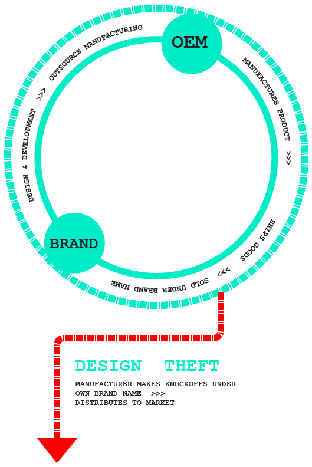
        </div>
        <div class="seven columns">
        <h2>THE CYCLE OF MANUFACTURING</h2>
        <p>The Original Equipment Manufacturer (OEM) is the brand that designs the device. Examples of large OEMs include Apple, HP, and Dell.</p>

<p>The company places an order with the Original Engineering Manufacturer (OEM). The OEM takes the design and manufactures the device. It is then sold by the original company under its own brand. OEMs are relatively unknown; the most infamous is Foxconn, but even it is not the largest.</p>

<p>After manufacture, the devices are shipped back to the distributor. However, the original design can be hijacked by employees or the factory itself during production. The design is manufactured at a similar facility, and the shanzhai device is born. This facility is called an Original Design Manufacturer (ODM) a company that designs and engineers its own products.</p>
        </div>
        <div class="two columns">
        	<div class="marginalia" id="m4">
            <h4>››  C-Net provides <a href="http://www.cnet.com.au/shanzhai-ji-all-you-need-to-know-about-fake-phones-339297258.htm">a great overview</a> about the supply and demand of shanzhai phones.</h4>
            </div>
        </div>
    </div>
</div>

<div class="scrollblock" id="essay3">
    <div class="container">
        <div class="seven columns">
        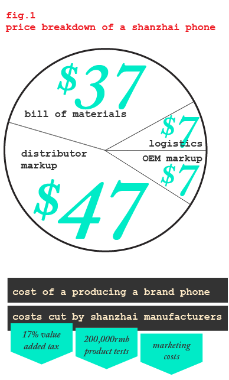
        <!----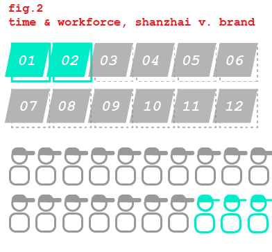---->
        </div>
        <div class="seven columns">
        <h2>SLASHING COST, SLASHING TIME</h2>
        <p>One of the largest draws for distributors of shanzhai phones is the relatively low cost of selling a shanzhai phone. Although shanzhai manufacturers make less profit than international brands, distributors can mark up shanzhai phones for almost double the manufacturing cost, making up to a 48% gross margin.</p>
        
<p>Manufacturers are incredibly adept at working on a shoestring budget. The average shanzhai manufacturer employs around 20 employees, but some teams work as low as three people.</p>
        </div>
        <div class="two columns">
        	<div class="marginalia" id="m5">
            <h4>››  For a more in-depth discussion about the data, see Jin-Li Hu, Hsiang Tzu-Wan, and Hang Zhu’s thesis: <a href="http://www.ajbmr.com/articlepdf/ajbmrv01n0305.pdf">The Business Model Of A Shanzhai Mobile Phone Firm In China.</a></h4>
            </div>
        </div>
    </div>
</div>

<div class="scrollblock" id="title3">
    <div class="container">
        <div class="eight columns">
        <p></p>
        </div>
        <div class="six columns">
        <h1>ANALYZING SHANZHAIJI</h1>
        <p class="titlep">This is the shanzhai buyers guide, or the closest you’ll find. The next section selects three of the most ubiquitous copied products, presenting its knock-off competitors side by side. We’ll teach you how to spot the fakes, but don’t be fooled; shanzhai devices cut corners, but innovate in incredibly useful user-centered ways.</p></div>
        <div class="two columns">
        	<div class="marginaliaOFF" id="m6">
            <h3>››  Your iPhone's guts, courtesy of the folks at <a href="http://www.ifixit.com/Teardown/iPhone+5+Teardown/10525/1">iFixIt</a>.</h3>
            </div>
        </div>
    </div>
</div>


<div class="scrollblock" id="essay4">
    <div class="container">
        <div class="eight columns">
        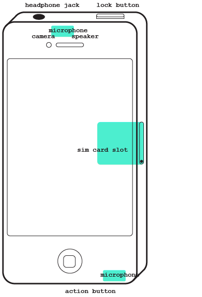
        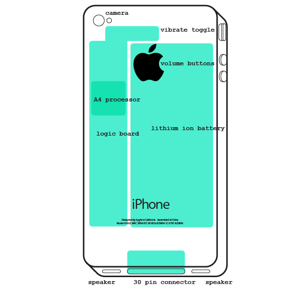
        </div>
        <div class="two columns">
        <p></p>
        </div>
        <div class="six columns">
        <h2>HOW TO DISSECT A SHANZHAIJI</h2>
        <p>When dissecting a shanzhai device, look for what we take for granted. The smallest changes — a shift of buttons, an extra bevel — can differentiate the fake from the authentic. We’ve picked out key features on an iPhone 4 that indicate another creator’s hand.</p>
        </div>
    </div>
</div>

<div class="container">
<div class="sixteen columns">
</div>
</div>

<div class="scrollblock" id="dissect1">
    <div class="container">
        <div class="two columns">
        	<div class="marginalia" id="m7">
            	<h4>The GooPhone i5.</h4>
                <h4>››  <a href="http://micgadget.com/29510/goophone-vows-to-sue-apple-if-next-iphone-releases-in-china-video/">Find an in-depth review here.</a></h4>
            </div>
            <div class="marginalia" id="m8">
                <h4>The GooPad Mini</h4>
                <h4>››  <a href="http://micgadget.com/30970/apples-ipad-mini-knockoff-revealed-call-it-the-goopad-mini/">Find an in-depth review here.</a></h4>
            </div>
        </div>
        <div class="eight columns">
        		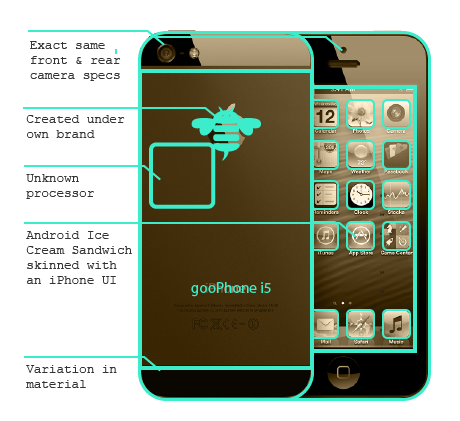
        		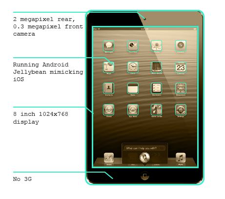
        </div>
        <div class="six columns">
        <h2>THE COPY CULT OF APPLE</h2>
<p>Three months before the iPhone 5 was announced, a shanzhai manufacturer swiped the design, produced, and released the iPhone 5 under its own brand name — the gooPhone i5. Part homage, part threat, the gooPhone creators immediately copyrighted and threatened to sue Apple should they release of the iPhone 5 in China. China’s relationship with Apple is complex; despite that, China's Apple obsession flourishes. </p>
<p>Apple and China's manufacturing complex are irreversibly intertwined, for better and worse. Shenzhen is the home of Foxconn, the manufacturer of the iPhone and iPad. Foxconn is plagued with poor press — suicides and reports of poor working conditions are rife in the American press. Despite this, Foxconn remains a desirable employer for Chinese laborers; an entire city equipped with housing, restaurants, and stores, the Foxconn campus provides a secure wage and a living environment that many migrant workers envy.</p>
<p>Yet, the Apple obsession goes beyond its products. Steve Jobs has evolved into a saintly figure across China, praised for his innovation and capitalist acumen. Pundits discuss, “How can China produce its own Steve Jobs?” If a man is as much a product of his environment as himself, then perhaps China’s Steve Jobs is a contradiction.</p>
        </div>
    </div>
</div>

<div class="scrollblock" id="dissect2">
    <div class="container">
        	<div class="two columns">
        	<div class="marginalia" id="m9">
            	<h4>The Rockchip RK3066.</h4>
                <h4>››  <a href="http://www.shanzhaiben.com/99/n-6299.html">Find an in-depth review here.</a></h4>
            </div>
            <div class="marginalia" id="m10">
                <h4>The haiPad</h4>
                <h4>››  <a href="http://www.shanzhaiben.com/76/n-5876.html">Find an in-depth review here.</a></h4>
            </div>
        	</div>
        	<div class="eight columns">
        		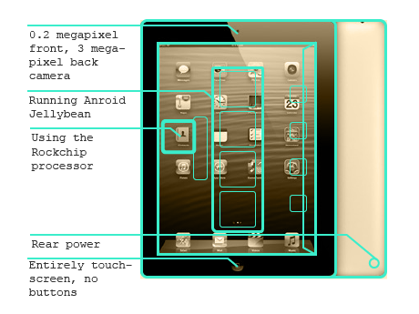
        		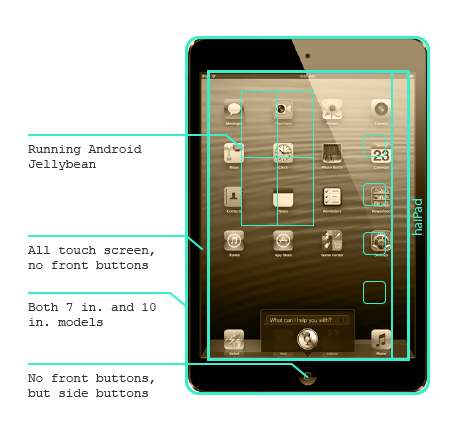
        	</div>
        <div class="six columns">
        <h2>ANDROID DOMINANCE</h2>
        <p>Although many Chinese citizens see the iPhone as their ideal phone, chances are they’re holding an Android device in their hand. Google’s mobile operating system is exploding across China, and whether the phone is authentic or knock-off, over 75% of mobile devices in China now run Android. Google's OS is ideal for many reasons: it’s free to license, it’s endlessly customizable, and it’s got the backing of one of the largest software companies in the world. If you see an iPhone UI that looks just slightly off, you’re seeing a reskinned Android OS.</p>

<p>Despite the massive success, the relationship between Google and China is tense. Google no longer maintains offices in China due to a dispute over censorship laws three years ago. As a result, Google search is blocked in mainland China and most Android phones come pre-installed with China’s state-owned search company Baidu. For Google, this is bad news: China is the world’s largest smartphone market, and the revenue lost from missing Google Search and Maps leaves a dent in Google’s worldwide share and revenue.</p>

<p>China is important to Google, and Google to China. However, a strained relationship prohibits true dominance for either party.</p>
        </div>
    </div>
</div>

<div class="scrollblock" id="dissect3">
    <div class="container">
        	<div class="two columns">
        	<div class="marginalia" id="m11">
            	<h4>The Dropad</h4>
                <h4>››  <a href="http://www.shanzhaiben.com/23/n-4823.html">Find an in-depth review here.</a></h4>
            </div>
            <div class="marginalia" id="m12">
                <h4>The "Big iPhone"</h4>
                <h4>››  <a href="http://www.shanzhaiben.com/32/n-4632.html">Find an in-depth review here.</a></h4>
            </div>
        	</div>
        	<div class="eight columns">
        		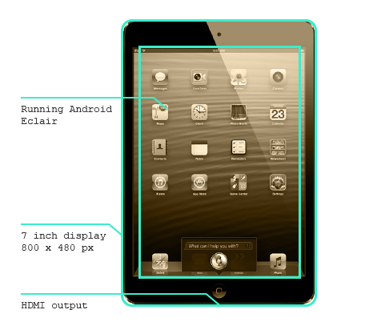
        		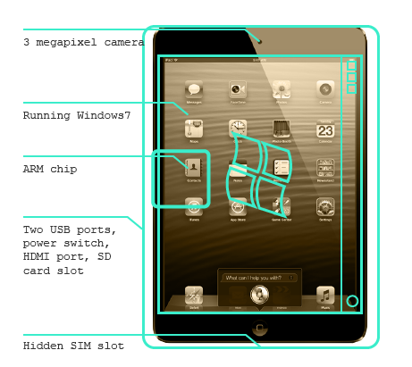
        	</div>
        <div class="six columns">
        <h2>PREDICTIVE DESIGN</h2>
        <p>Shanzhai manufacturers are equipped with the infrastructure and capability to produce near-identical copies of iPhones and iPads. It shouldn't come as a surprise that some manufacturers opt to experiment with their own products. Occasionally, these products predict future technology.</p>

<p>At the beginning of 2012, the tablet market flourished. Although the iPad held its dominant position, the market was flooded with smaller seven inch models. Shanzhai manufacturers began to experiment, combining the aesthetic design of the iPad at the proportions of smaller Android-based models.</p>

<p>What emerged was an amalgam of style and function — some appeared as scaled-down iPads, others as oversized iPhones. However, these smaller tablets filled the market before Apple officially released its own iPad mini. Not only did shanzhai manufacturers predict what's next to come based on a keen analysis of China's tablet market, they beat the supplier to the punch line, however inelegantly.</p>
        </div>
    </div>
</div>

<div class="scrollblock" id="title4">
    <div class="container">
        <div class="eight columns">
        <p></p>
        </div>
        <div class="six columns">
        <h1>LIVING SHANZHAI</h1>
        <p class="titlep">The shanzhai style of creation — swiping designs, rapid development, cutting costs and quality — is distinct, effective. However, the stories surrounding shanzhai may lead to its unavoidable decline.</p>
        </div>
        <div class="two columns">
        </div>
    </div>
</div>

<div class="scrollblock" id="essay5">
    <div class="container">
        <div class="six columns">
			<p></p>
        </div>
        <div class="eight columns">
        <h2>SHANZHAI DANGER</h2>
        <p>Your mother tells you not to use your cellphone while pumping gas — your cellphone could explode. Seems irrational, but this time you’d better listen: shanzhai electronics are responsible for those urban legends.</p>

<p>When manufacturers in Shenzhen run out of tactics for one-upping their competition, they start to cut costs. One of the first lambs to be sacrificed: quality. Manufacturers look for alternatives to costly rare minerals, or test thinner, cheaper plastic recipes. This leads to incidents like the exploding phones.</p>

<p>Both iPhone 3GS and Nexus 7 cellphone models have had recorded explosions. In both cases, the battery swells to an abnormal amount, bursting open the case and destroying the interior of the phone. Neither owner is harmed, and both are compensated with a new model. </p>

<p>However, this type of cutting corners is not solely a symptom of shanzhai production. China’s lack of industry regulation has lead to a variety of disasters spawning from poorly constructed products.</p>

<p>In September 2008, fourteen babies fell ill, all nursed on the same brand of milk powder. Over the next three months, thousands of babies fell ill as producers admitted the toxic chemical melamine was discovered in Chinese milk products across the country and overseas, including dairy products, animal feed, and overseas chocolate brands.</p>

<p>The 2008 Sichuan Earthquake exposed the devastating effects of cutting costs and side-stepping government regulation. During the earthquake, thousands of newly-made schools collapsed, killing and injuring thousands of children; older buildings were left completely unscathed. Subsequent investigations revealed that construction groups and government officials cut engineering and materials in order to save costs.</p>

<p>At a smaller scale, cutting costs affect nothing more than destroying a luxury device. However, at a larger scale, the draw to preserve profits over creating a safe, well-made product lead to disaster.</p>
        </div>
        <div class="two columns">
        	<div class="marginalia" id="m13">
            <h4>››  Yes, the exploding phone is real. <a href="http://micgadget.com/30695/first-case-of-googles-nexus-7-spontaneously-combusts-while-charging/">Read about the Nexus 7.</a></h4>
            </div>
            <div class="marginalia" id="m14">
            <h4>››  <a href="http://micgadget.com/21588/iphone-3gs-seems-to-be-the-most-likely-model-to-explode-videos/">Don’t forget the iPhone 3GS.</a></h4>
            </div>
        	<div class="marginalia" id="m15">
            <h4>››  <a href="http://news.bbc.co.uk/2/hi/7720404.stm">More about China’s Milk Scandal.</a></h4>
            </div>
        	<div class="marginalia" id="m16">
            <h4>››  <a href="http://news.bbc.co.uk/2/hi/asia-pacific/7400524.stm">The tragedy of the Sichuan Earthquake.</a></h4>
            </div>

        </div>
    </div>
</div>

<div class="scrollblock" id="essay6">
    <div class="container">
        <div class="six columns">
			<p></p>
        </div>
        <div class="eight columns">
        <h2>MAKER/COPYCAT</h2>
        <p>From where will the next great innovator arise? Who will take the world by storm, creating a paradigm shift of how we think about technology? Who will be the next Steve Jobs, and will he be Chinese? </p>

<p>These are the questions that Chinese pundits and politicians ask, as officials attempt to incubate a culture that hatches the next era’s great innovators. But many find China lacking, a mixture of cultural values and strict education creating tension that diffuses innovative spirit. </p>

<p>Despite birthing some of the world’s largest innovations, including paper and the compass, China’s educational system emphasizes conformity above all else. Imperial examinations consisted of rote memorization, reciting line after line of Confucian classics. China’s current education system differs little in style: rote memorization is key to the top of school entrance exams, and key to a student’s successful future. As a result, Chinese schools dominate worldwide standardized testing, but students lack critical thinking skills. Students carry the drive and relentlessness of budding entrepreneurs, but few dare to disrupt industry.</p>

<p>Many shanzhai manufactures embody the risk-taking entrepreneurial spirit, but their products are conservative. For many, changing the design of their copied iPad is driven by lowering costs, or increasing market competitiveness. None of these changes truly innovate — those that do innovate are happy accidents. Shanzhai innovation is not the goal, it’s simply a lucky bonus.</p>

<p>Even China’s best run for Steve Jobs is another copy. Xiaomi, a rapidly growing Chinese cellphone manufacturer, cultivates an air of exclusivity and secrecy mimicking Apple products. While the company’s products are not outright Apple copycats, the CEO appears otherwise. At interviews and press announcements wearing a copy of the late Apple co-founder’s black turtleneck and jeans, Xiaomi’s co-founder Lei Jun certainly appears to be the Chinese version of Steve Jobs. However, the products fall short of innovative achievement.</p>

<p>China’s struggle to create its own culture of innovation will surely be overcome. But the perfect storm of cultural influences that give rise to hackers in Silicon Valley is absent from today’s China. China’s next Steve Jobs is most likely a pirate of shanzhai devices; his Silicon Valley is yet to be found.</p>

        </div>
        <div class="two columns">
        	<div class="marginalia" id="m17">
            <h4>››  The New Yorker discusses a national <a href="http://www.newyorker.com/online/blogs/newsdesk/2012/06/searching-for-a-chinese-steve-jobs.html">“Steve Jobs Talent Search”</a>. </h4>
            </div>
            <div class="marginalia" id="m18">
            <h4>››  NPR on <a href="http://www.npr.org/2010/12/29/132416889/chinese-top-in-tests-but-still-have-lots-to-learn">China's rigorous education system</a>.</h4>
            </div>
        	<div class="marginalia" id="m19">
            <h4>››  More about the <a href="http://www.slate.com/articles/technology/future_tense/2012/10/china_s_pirates_are_improving_iphones_ipads_and_other_technology_.html">pervasive culture of piracy</a> in China.</h4>
            </div>
        	<div class="marginalia" id="m20">
            <h4>››  <a href="http://www.benzinga.com/news/12/12/3155576/did-china-birth-the-next-steve-jobs">A profile on Lei Jun</a>, the copycat Steve Jobs.</h4>
            </div>

        </div>
    </div>
</div>

<div class="scrollblock" id="essay7">
    <div class="container">
        <div class="two columns">
			<p></p>
        </div>
        <div class="twelve columns">
        <h2>THE FUTURE OF SHANZHAI: THE RISE OF THE MAKER</h2>
        <p>Shanzhai design is responsive, innovative, and resourceful. Yet creating a shanzhai product introduces a level of danger to the process, while the outcome is unreliable at best, illegal at worst. Despite the user-driven innovation, shanzhai devices are declining in sales. Shanzhai manufacturers are in danger.
</p>

<p>Multiple factors are creating the perfect storm for shanzhai's destruction. Government officials and international corporations are teaming up to crack down on counterfeits and knock-offs. China's native electronics brands are gaining leverage within the market, as major players like Xiaomi replicate the energy and hype of international brands. The public is attaining a keener eye for design; while shanzhai devices provide the illusion of good design for the novice, younger Chinese students have sharper eyes and would be embarrassed to be caught with a knockoff. These shanzhai manufacturers, faced with a shrinking market share, need to adapt their shanzhai method of development in order to survive the escalating change of the market.</p>

<p>Hack. Make. Deconstruct, reconstruct. The shanzhai method of development isn't restricted to the People's Republic of China.</p>

<p>In America, little girls are crafting blinking, electric castles with introductory engineering kits like the Hummingbird. Parents are using DIY vacuuforming kits to make their child’s Halloween costume. Circuits, molding, 3D printing — all of these technologies are becoming viable forms for creative exploration. This is the Maker movement, and it's growing throughout the world.</p>

<p>Makers are a peculiar brand of creators — part hacker, part designer, part crafter — that are integrating high-tech development and human centered design to create products designed for themselves on a high scale basis. Makers take advantage of an incredible market shift — complex technologies like 3D printers and laser cutters are rapidly decreasing in price and popping up in public spaces. Community libraries are dedicating space for maker communities, and maker labs are spreading from metropolitan areas to smaller communities all over the country.</p>

<p>The advent of maker technology is shifting product demand from large corporations to your next door neighbor. It’s not uncommon for a maker to design a lo-fi product, put up a prototype online, and launch a successful multi-thousand dollar campaign overnight. Crowdfunding communities like Kickstarter provide the impetus for such action, and large online communities like the Maker community support the initiative. Strange, cool products are becoming less likely to be found at your local gadget store; if you’re looking for something truly unusual, it might be emerging from your local high school shop class.</p>

<p>The maker community is growing. Maker Faires, local gatherings where hackers and DIY-ers share their craft, are popping up all over the US and expanding across the globe. Some shanzhai developers are joining the maker movement in China. In September 2010, China's first makerspace, dubbed "The New Factory", opened in Shanghai. Since then, China's first Maker Faire was launched in Shenzhen, and the government has latched on to the movement, supporting  numerous spaces to foster innovation. 
</p>

<p>In the maker community, shanzhai has taken on a second connotation, one promoting open source information and sharing knowledge. In these spaces, shanzhai manufacturers and hackers question what it means to make, pushing to move beyond copycat to a culture of innovation and openness. The old form of shanzhai may be dying; however, it's next incarnation will change what it means to be "Made in China".
</p>

        </div>
        <div class="two columns">
        	<div class="marginalia" id="m21">
            <h4>››  <a href="http://www.fastcoexist.com/1680168/hummingbird-an-educational-robotics-kit-designed-to-get-girls-into-engineering">More about the Hummingbird.</a></h4>
            </div>
            <div class="marginalia" id="m22">
            <h4>››  Check out the Maker Bible, <a href="http://www.makezine.com">Make Magazine.</a></h4>
            </div>
        	<div class="marginalia" id="m23">
            <h4>››  Find <a href="http://makezine.com/groups/index.csp">your own community</a>.</h4>
            </div>
        	<div class="marginalia" id="m24">
            <h4>››  <a href="http://interactions.acm.org/archive/view/november-december-2012/created-in-china">One maker's perspective</a> of the evolution of China's Hacker Spaces.</h4>
            </div>

        </div>
    </div>
</div>

<div class="scrollblock" id="end">
    <div class="container">
        <div class="two columns">
			<p></p>
        </div>
        <div class="twelve columns">
        <div id="about">
        
			<h2>About the Author</h2>
            <p>Emelyn Baker is a design student at the University of Illinois at Champaign-Urbana. She focuses on the messy process of designing across cultures, and spends her free time learning Mandarin Chinese. See more of her work at <a href="http://www.emelynbaker.com/">her portfolio</a> or <a href="mailto:emelyn.baker@gmail.com">say hello</a>.</p>
        </div>
        <div id="citations">
        <h2>Thanks for reading!</h2>
        <p>If you're looking for more information on shanzhai manufacturing or maker culture, here's a great list of resources.</p>
        <div id="citeleft">
        	<ul>
        	<li>· <a href="http://www.engadget.com/2012/06/19/keepin-it-real-fake-four-sims-two-memory-card-slots-one-iden/">Keepin' it real fake: four SIMs, two memory card slots, one identity crisis by Donald Melanson</a></li>
        	<li>· <a href="http://www.creativetransformations.asia/media/wipps/Renegades_on_the_frontier_of_innovation.pdf">Renegades on the frontier of innovation: the shanzhai grassroots communities of Shenzhen, China by Michael Keane and Elaine Jing Zhao</a></li>
        	<li>· <a href="http://www.cnet.com.au/shanzhai-ji-all-you-need-to-know-about-fake-phones-339297258.htm">Shanzhai ji: All you need to know about fake phones by Brendon Chase</a></li>
        	<li>· <a href="http://www.ajbmr.com/articlepdf/ajbmrv01n0305.pdf">The Business Model of a Shanzhai Mobile Phone Firm in China by Jin-Li Hu, Hsiang-Tzu Wan, and Hang Zhu</a></li>
        	<li>· <a href="http://www.ifixit.com/Teardown/iPhone+5+Teardown/10525/1">iPhone 5 Teardown by iFixIt</a></li>
        	<li>· <a href="http://micgadget.com/29510/goophone-vows-to-sue-apple-if-next-iphone-releases-in-china-video/">Goophone i5 Vows To Sue Apple if the Next iPhone Releases in China by Herman Lai</a></li>
        	<li>· <a href="http://micgadget.com/30970/apples-ipad-mini-knockoff-revealed-call-it-the-goopad-mini/">Apple’s iPad Mini Knockoff Revealed, Call it The “GooPad Mini”! by Herman Lai</a></li>
        	<li>· <a href="http://www.shanzhaiben.com/99/n-6299.html">iPad替代者，品铂9.7寸RK3066双核平板上市 by Karon</a></li>
        	<li>· <a href="http://www.shanzhaiben.com/76/n-5876.html">海纳Haipad全面迈入Android4.0时代 by Finale</a></li>
        	<li>· <a href="http://www.shanzhaiben.com/23/n-4823.html">PV210芯iPhone4外观，7寸电容屏Dropad评测2 by webmaster</a></li>
            <li>· <a href="http://www.shanzhaiben.com/32/n-4632.html">又见面了 越洋回来的大“iPhone"平板电脑 by Karon</a></li>
			</ul>
        </div>
        <div id="citeright">
        </div>
        	<ul>
            <li>· <a href="http://micgadget.com/30695/first-case-of-googles-nexus-7-spontaneously-combusts-while-charging/">First Case of Google’s Nexus 7 Spontaneously Combusts While Charging by Herman Lai</a></li>
        	<li>· <a href="http://micgadget.com/21588/iphone-3gs-seems-to-be-the-most-likely-model-to-explode-videos/">iPhone 3GS Seems To Be The Most Likely Model To Explode by Herman Lai</a></li>
        	<li>· <a href="http://news.bbc.co.uk/2/hi/7720404.stm">Timeline: China milk scandal by BBC</a></li>
        	<li>· <a href="http://news.bbc.co.uk/2/hi/asia-pacific/7400524.stm">China anger over shoddy schools by BBC</a></li>
        	<li>· <a href="http://www.newyorker.com/online/blogs/newsdesk/2012/06/searching-for-a-chinese-steve-jobs.html">Searching for a Chinese Steve Jobs by Jiayang Fan</a></li>
        	<li>· <a href="http://www.npr.org/2010/12/29/132416889/chinese-top-in-tests-but-still-have-lots-to-learn">Chinese Top In Tests, But Educators Call For Reform by Rob Gifford</a></li>
        	<li>· <a href="http://www.slate.com/articles/technology/future_tense/2012/10/china_s_pirates_are_improving_iphones_ipads_and_other_technology_.html">The Chinese Steve Jobs Is Probably a Pirate by Christopher Beam</a></li>
        	<li>· <a href="http://www.benzinga.com/news/12/12/3155576/did-china-birth-the-next-steve-jobs">Did China Birth the Next Steve Jobs? by Louis Bedigian</a></li>
        	<li>· <a href="http://www.fastcoexist.com/1680168/hummingbird-an-educational-robotics-kit-designed-to-get-girls-into-engineering#1">Hummingbird: An Educational Robotics Kit Designed To Get Girls Into Engineering by Karen A. Frenkel</a></li>
        	<li>· <a href="http://makezine.com/">Makezine</a></li>
        	<li>· <a href="http://makezine.com/groups/index.csp">Maker Community Groups and Spaces</a></li>
        	<li>· <a href="http://interactions.acm.org/archive/view/november-december-2012/created-in-china">Created in China by Silvia Lindtner and David Li</a></li> 
        </ul>
        </div>
        </div>
        <div class="two columns">
			<p></p>
        </div>
    </div>
</div>


</body>

</html>
